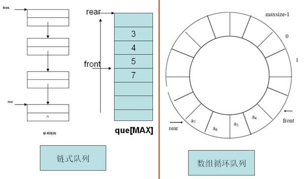
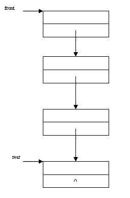

03队列
3.1 队列定义：先进先出
队列是一种只允许前端（front，队首）进行删除操作，而在后端（rear，队尾）进行插入操作的数据结构。正是因为规定了从队首删除队尾插入的性质，因此最先插入的元素将是最先被删除的元素；反之最后插入的元素将是最后被删除的元素，因此队列又称为“先进先出”（FIFO—first in first out）的数据结构。
队列是一种使用很广泛的数据结构，比如操作系统的进程调度就是用的队列，图的广度优先遍历也使用的是队列。
队列也是一种很好理解的数据结构。比如人们去银行办事，就是排成一队，新到的人从队尾插入，而银行工作人员都是从队首开始受理业务，受理完，队首的人就离开队列（从队列中删除）。
3.2 队列结构：尾部插入，前端删除
如下图所示，队列底层数据结构可以使用链表或者数组。在使用链表的时候，如下图左边部分所示，用front和rear两个指针分别指向队列的前端和后端。在使用数组的时候，分别用2个整数front和rear做数组的下标，指向数组的前端和尾端。
需要注意的是，如果用数组作为队列的底层结构，那么在不断的插入元素和删除元素的时候，数组的内存空间将会不断的向上滑动（如下图中间部分所示），这在实际应用过程中肯定是不好的，因此假如数组的长度为MAX，通过用rear=(rear+1)%MAX和front=(front+1)%MAX来移动数组的前端和尾端，可以限制它们在数组的当前空间，这样就构成了一个循环队列（如下图右边部分所示）。
3.3 队列基本操作
队列包含创建，入队，出队，队空判断，对满判断等操作。
1. 创建
int CreateQue();
用于创建一个队列，一般需要初始化队列的前端和后端指针。
2. 入队
int EnQueue(int e);
将特定的元素e从队列的尾部插入。
3. 出队
int DeQueue(int *e);
获取队列头部的数据并从队列删除。
4. 判断队列满
int IsQueueFull();
判断队列是否已满，如果队列满了就不能再从尾部插入数据了，只对基于数组的队列有效。
5. 判断队列空
int IsQueueEmpty();
判断队列是否为空，如果队列为空，就不能从队首删除数据了，在构造基于链表的队列的时候，队列为空，插入第一个元素的时候，也需要特别的处理。
3.4 基于链表的链队
链表结点的存储结构如下：
typedef struct _node
{
int value;
struct _node *next;
}node,*pnode;
其中值的部分存放的是一个整数data，这部分数据可以自己再定义，增减。
node *front=NULL; //队头指针，由于是全局变量，请注意多线程安全 node *rear=NULL; //队尾指针，由于是全局变量，请注意多线程安全
在实现队列的基本操作的时候，最好是先画出队列的图形，如上图所示，然后按照图形来写各种操作的代码，思路就会比较清晰（注意，在多线程环境下，下面的代码没有提供加锁机制，需要另外处理）。
//创建队列
int CreateQueue()
{
front = rear = NULL;//将front和rear置为NULL
return 1;
}
//判断队列是否为空
int IsQueueEmpty()
{
if(front==NULL&&rear==NULL)//front和rear等于NULL是队列为空的标志
{
return 1;
}
return 0;
}
//入队
int EnQueue(int e)
{
node *p = (node *)malloc(sizeof(node));
if(p==NULL)
{
return -1;
}
memset(p,0,sizeof(node));
p->value = e;
p->next = NULL;
if(IsQueueEmpty())//队列为空，直接将rear和front指向该结点
{
rear=front=p;
return 1;
}
//队列不为空，插入尾部
rear->next = p;
rear = p;
return 1;
}
//出队
int DeQueue(int *e)//必须传指针，否则出队的值无法获取
{
if(IsQueueEmpty())
{
return -1;
}
if(e==NULL)
{
return -1;
}
//只有一个结点的时候
if(rear==front && rear!=NULL)
{
*e = rear->value;
free(rear);
front=rear=NULL;
return 1;
}
//多个结点的时候
*e = front->value;
node *q =front;
front = front->next;
free(q);
return 1;
}
//遍历队列
void TraverseQueue()
{
while(!IsQueueEmpty())
{
int value;
DeQueue(&value);
printf("%d ",value);
}
printf("\n");
}
//队列测试代码
int _tmain(int argc, _TCHAR* argv[])
{
int value;
CreateQueue();
EnQueue(3);
EnQueue(1);
EnQueue(0);
EnQueue(5);
DeQueue(&value);
printf("value:%d\n", value);
EnQueue(18);
EnQueue(27);
DeQueue(&value);
printf("value:%d\n", value);
DeQueue(&value);
printf("value:%d\n", value);
TraverseQueue();
return 0;
}
3.5 基于数组的循环队列
如下图所示，基于数组的循环队列，有3种形态：
1 队列为空，这个时候front等于rear，如下图左边部分所示。
2 正常形态，这个时候，front指向队首元素，rear指向队尾元素的下一个位置，如下图中间部分所示。
3 队列满，这个时候，队尾指针指向队首指针的前一个位置（空位）。如下图右边部分所示。
因此，循环队列在队列满的时候，会浪费一个空间，这主要是为了区分队列空和队列满的2个状态的。否则，如果最后一个空间也存放元素，那么rear在加1后，就和front相等了，这和队列为空的判断条件是冲突的。

在实现基于数组的队列的基本操作的时候，结合上面3个队列的基本形态来写代码，会显得思路清晰。下面是具体的代码与数据结构（注意，在多线程环境下，下面的代码没有提供加锁机制，需要另外处理）：
#define MAXSIZE 100//数组的元素个数
int Queue[MAXSIZE]={0};//队列的底层数据结构，数组，支持100个元素
int rear = 0;//队列后端，插入的位置
int front = 0;//队列前端，删除的位置
创建队列，将前端和后端置0
int CreateQueue()
{
rear = front = 0;
return 1;
}
判断队列是否为空
int IsQueueEmpty()
{
return rear==front?1:0;//front等于rear，队列即为空
}
判断队列是否满
int IsQueueFull()
{
return (rear+1)%MAXSIZE == front?1:0;//注意判断标准
}
入队：
int EnQueue(int e)
{
if(IsQueueFull())
{
return -1;
}
Queue[rear]=e;
rear = (rear+1)%MAXSIZE;
return 1;
}
出队
int DeQueue(int *e)
{
if(IsQueueEmpty())
{
return -1;
}
if (e==NULL)
{
return -1;
}
*e = Queue[front];
front = (front + 1)%MAXSIZE;
return 1;
}
队列遍历：
void TraverseQue()
{
while(!IsQueueEmpty())
{
int val;
DeQueue(&val);
printf("%d ",val);
}
printf("\n");
}
接口测试：
int _tmain(int argc, _TCHAR* argv[])
{
for(int i=0;i<200;i++)
{
EnQueue(i);
}
int val = 0;
DeQueue(&val);
printf("val:%d\n",val);
DeQueue(&val);
printf("val:%d\n",val);
TraverseQue();
return 0;
}
本页共263段，5106个字符，8243 Byte(字节)